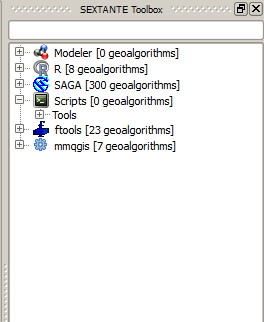
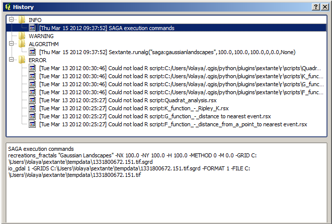

Introduction¶
This chapter introduces SEXTANTE, the powerful geospatial analysis framework of QGIS. SEXTANTE is a geoprocessing environment that can be used to call native and third party algorithms from QGIS, making your spatial analysis tasks more productive and easy to accomplish.
In the following sections we will review how to use the graphical elements of SEXTANTE and take the most out of each one of them
Basic elements of the SEXTANTE GUI¶
There are four basic elements in the SEXTANTE GUI, which are used to run SEXTANTE algorithms for different purposes. Choosing one tool or another will depend on the kind of analysis that is to be performed and the particular characteristics of each user and project. All of them (except for the batch processing interface, which is called from the toolbox, as we will see) can be accessed from the SEXTANTE menu item (you will see more than four entries. The remaining ones are not used to execute algorithms and will be explained later in this chapter).
The SEXTANTE toolbox. The main element of the SEXTANTE GUI, it is used to execute a single algorithm or run a batch process based on that algorithm.
The SEXTANTE graphical modeler. Several algorithms can be combined graphically using the modeler to define a workflow, creating a single process that involves several sub-processes

The SEXTANTE history manager. All actions performed using any of the aforementioned elements are stored in a history file and can be later easily reproduced using the history manager
The SEXTANTE batch processing interface manager. This interface allows you to execute batch processes and automate the execution of a single algorithm on multiple datasets.

Along the following sections we will review each one of this elements in detail.